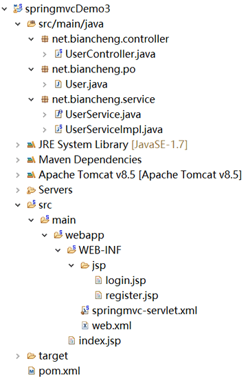
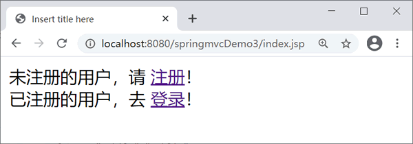
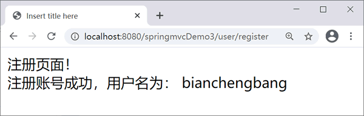
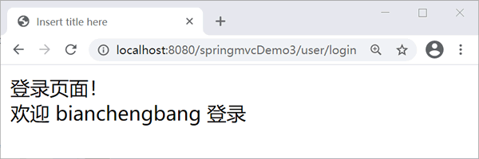
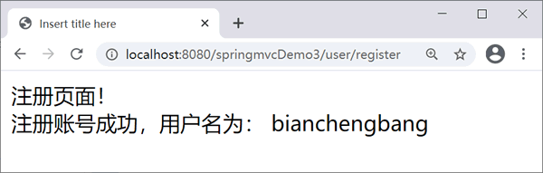
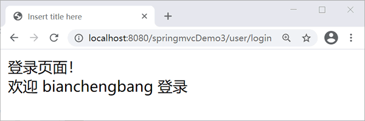

首页 > 编程笔记
Spring MVC @Autowired和@Service注解
将依赖注入到 Spring MVC 控制器时需要用到 @Autowired 和 @Service 注解。
@Autowired 注解属于 org.springframework.beans.factory. annotation 包，可以对类成员变量、方法及构造函数进行标注，完成自动装配的工作。
@Service 注解属于 org.springframework.stereotype 包，会将标注类自动注册到 Spring 容器中。
在配置文件中需要添加 <component-scan/> 元素来扫描依赖基本包。
springmvc-servlet.xml 代码如下。
@Autowired 注解属于 org.springframework.beans.factory. annotation 包，可以对类成员变量、方法及构造函数进行标注，完成自动装配的工作。
@Service 注解属于 org.springframework.stereotype 包，会将标注类自动注册到 Spring 容器中。
在配置文件中需要添加 <component-scan/> 元素来扫描依赖基本包。
<context:component-scan base-package="net.biancheng.service"/>
示例
下面新建 Web 应用 springmvcDemo3 进一步说明 Spring MVC 如何应用依赖注入。应用目录结构如下。

User 实体类如下。
package net.biancheng.po;
public class User {
private String name;
private String pwd;
/*省略setter和getter方法*/
}
新建 net.biancheng.service 包，创建 UserService 接口，代码如下。
package net.biancheng.service;
import net.biancheng.po.User;
public interface UserService {
boolean login(User user);
boolean register(User user);
}
创建 UserServiceImpl 类，实现 UserService 接口，代码如下。
package net.biancheng.service;
import org.springframework.stereotype.Service;
import net.biancheng.po.User;
@Service
public class UserServiceImpl implements UserService {
@Override
public boolean login(User user) {
if ("bianchengbang".equals(user.getName()) && "123456".equals(user.getPwd())) {
return true;
}
return false;
}
@Override
public boolean register(User user) {
if ("bianchengbang".equals(user.getName()) && "123456".equals(user.getPwd())) {
return true;
}
return false;
}
}
新建 net.biancheng.controller 包，创建 UserController 类，代码如下。注意：为了使类能被 Spring 扫描到，必须为其标注 @Service。
package net.biancheng.controller;
import org.springframework.beans.factory.annotation.Autowired;
import org.springframework.stereotype.Controller;
import org.springframework.ui.Model;
import org.springframework.web.bind.annotation.RequestMapping;
import net.biancheng.po.User;
import net.biancheng.service.UserService;
@Controller
@RequestMapping("/user")
public class UserController {
@Autowired
private UserService userService;
@RequestMapping("/login")
public String getLogin(Model model) {
User us = new User();
us.setName("bianchengbang");
userService.login(us);
model.addAttribute("user", us);
return "login";
}
@RequestMapping("/register")
public String getRegister(Model model) {
User us = new User();
us.setName("bianchengbang");
userService.login(us);
model.addAttribute("user", us);
return "register";
}
}
在 UserService 上添加 @Autowired 注解会使 UserService 的一个实例被注入到 UserController 实例中。springmvc-servlet.xml 代码如下。
<?xml version="1.0" encoding="UTF-8"?>
<beans xmlns="http://www.springframework.org/schema/beans"
xmlns:xsi="http://www.w3.org/2001/XMLSchema-instance"
xmlns:mvc="http://www.springframework.org/schema/mvc"
xmlns:p="http://www.springframework.org/schema/p"
xmlns:context="http://www.springframework.org/schema/context"
xsi:schemaLocation="
http://www.springframework.org/schema/beans
http://www.springframework.org/schema/beans/spring-beans.xsd
http://www.springframework.org/schema/context
http://www.springframework.org/schema/context/spring-context.xsd
http://www.springframework.org/schema/mvc
http://www.springframework.org/schema/mvc/spring-mvc.xsd">
<context:component-scan
base-package="net.biancheng" />
<mvc:annotation-driven />
<bean id="viewResolver"
class="org.springframework.web.servlet.view.InternalResourceViewResolver">
<!--前缀 -->
<property name="prefix" value="/WEB-INF/jsp/" />
<!--后缀 -->
<property name="suffix" value=".jsp" />
</bean>
</beans>
web.xml 代码如下。
<?xml version="1.0" encoding="UTF-8"?>
<web-app xmlns:xsi="http://www.w3.org/2001/XMLSchema-instance"
xmlns="http://java.sun.com/xml/ns/javaee"
xmlns:web="http://java.sun.com/xml/ns/javaee/web-app_2_5.xsd"
xsi:schemaLocation="http://java.sun.com/xml/ns/javaee http://java.sun.com/xml/ns/javaee/web-app_3_0.xsd"
version="3.0">
<display-name>springMVC</display-name>
<!-- 部署 DispatcherServlet -->
<servlet>
<servlet-name>springmvc</servlet-name>
<servlet-class>org.springframework.web.servlet.DispatcherServlet</servlet-class>
<init-param>
<param-name>contextConfigLocation</param-name>
<param-value>/WEB-INF/springmvc-servlet.xml</param-value>
</init-param>
<!-- 表示容器再启动时立即加载servlet -->
<load-on-startup>1</load-on-startup>
</servlet>
<servlet-mapping>
<servlet-name>springmvc</servlet-name>
<!-- 处理所有URL -->
<url-pattern>/</url-pattern>
</servlet-mapping>
</web-app>
index.jsp 文件内容如下。
<%@ page language="java" contentType="text/html; charset=UTF-8"
pageEncoding="UTF-8"%>
<!DOCTYPE html PUBLIC "-//W3C//DTD HTML 4.01 Transitional//EN" "http://www.w3.org/TR/html4/loose.dtd">
<html>
<head>
<meta http-equiv="Content-Type" content="text/html; charset=UTF-8">
<title>Insert title here</title>
</head>
<body>
未注册的用户，请
<a href="${pageContext.request.contextPath }/user/register"> 注册</a>！
<br /> 已注册的用户，去
<a href="${pageContext.request.contextPath }/user/login"> 登录</a>！
</body>
</html>
login.jsp 文件内容如下。
<%@ page language="java" contentType="text/html; charset=UTF-8"
pageEncoding="UTF-8"%>
<!DOCTYPE html PUBLIC "-//W3C//DTD HTML 4.01 Transitional//EN" "http://www.w3.org/TR/html4/loose.dtd">
<html>
<head>
<meta http-equiv="Content-Type" content="text/html; charset=UTF-8">
<title>Insert title here</title>
</head>
<body>
登录页面！ 欢迎 ${user.name} 登录
</body>
</html>
register.jsp 文件内容如下。
<%@ page language="java" contentType="text/html; charset=UTF-8"
pageEncoding="UTF-8" %>
<!DOCTYPE html PUBLIC "-//W3C//DTD HTML 4.01 Transitional//EN" "http://www.w3.org/TR/html4/loose.dtd">
<html>
<head>
<meta http-equiv="Content-Type" content="text/html; charset=UTF-8">
<title>Insert title here</title>
</head>
<body>
注册页面！
注册账号成功，用户名为： ${user.name }
</body>
</html>
运行结果如下。

index.jsp页面

register.jsp页面

login.jsp页面
index.jsp页面

register.jsp页面

login.jsp页面
关注公众号「站长严长生」，在手机上阅读所有教程，随时随地都能学习。内含一款搜索神器，免费下载全网书籍和视频。

微信扫码关注公众号